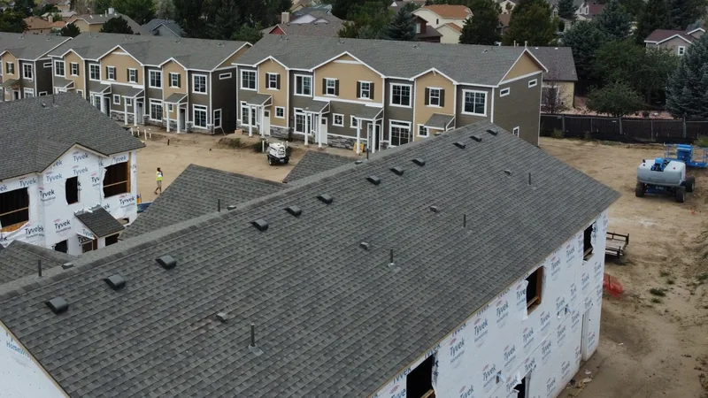

Lap siding suits almost any house around Knoxville. Board and batten suits fewer houses than the photos online would suggest, and shakes look best in small doses. That's our opinion, and here's what each style is and where it fits.
The styles, in plain words
Siding comes in a handful of profiles. A profile is just the shape of the board when you look at it from the end.
- Lap siding, also called clapboard. Long horizontal boards, each one overlapping the board below it. This is the one most people picture.
- Dutch lap. Also horizontal, with a groove along the top of each board that throws a deeper shadow line and reads a little more old-fashioned.
- Beaded. Horizontal boards with a small rounded bead along the bottom edge, for a tidy, traditional look.
- Board and batten. Wide vertical boards with narrow strips, the battens, covering the seams between them. It's the barn and farmhouse look.
- Vertical panel. Flat vertical siding with grooves and no raised battens.
- Shakes and shingles. Individual pieces made to look like cedar, with a straight or staggered bottom edge. Scallops, with rounded bottoms, are the gingerbread version.
Most of these come in vinyl and fiber cement, and engineered wood and real wood come in several of them too. Our siding page covers what we put up, and the products page lists the brands.
Texture is a separate choice from profile. Smooth boards look cleaner and more modern. Woodgrain texture reads more like painted wood from the street. Ask to see both in the same color before you choose.

The brick ranch
On a brick ranch, the brick is doing most of the work. Siding usually covers the gable ends, the back of the house, maybe a porch wall or a dormer. Keep it quiet. Lap siding in a color pulled from the brick or the trim is the safe pick. If you're only replacing the gables, matching the profile already on the back of the house keeps the change from standing out.
Board and batten on just the gable ends can work well here. It adds a little interest without fighting the brick. We'd skip shakes on a ranch. Next to brick, they tend to look busy.
The craftsman
Craftsman houses mix materials on purpose, so this is the house where combining profiles makes the most sense. Lap siding on the main walls, shakes up in the gables, and wide flat trim around the windows and doors.
If there's a front porch with tapered columns, shakes in the gable above it tie the whole front together.

The farmhouse
This is where board and batten belongs. White or light board and batten with dark window frames and a metal or dark shingle roof is the look a lot of people are after. It works best on a simple shape: a gable roof, a long front porch, not many bump-outs.
On a two-story house with a complicated roofline, board and batten all the way up can turn into a lot of vertical lines. Lap on the body with board and batten on the gables or around the porch gets you the same feel with less of it.

The two-story or townhome
For a taller, plainer box, lap or Dutch lap is hard to beat. The horizontal lines make a tall wall look a bit less tall. Some builders add shakes or board and batten on one gable or a bump-out to break up the front. One accent is plenty. On a townhome row, the HOA or the builder may have picked the profile already, so check before you change yours.
Before you pick
- Look at the style on a real house, in morning light and late afternoon. A sample board in your hand tells you less than a whole wall does.
- Check with your HOA if you have one. Some limit profiles as well as colors.
- Keep it to one main profile and one accent. Three styles on one house usually looks like nobody could decide.
- Ask about trim and corners. Corner posts, window surrounds and the boards along the roofline do a lot of the work of making siding look finished.
- If you're switching from horizontal to vertical, ask your installer what the wall needs underneath to hold it. Vertical siding fastens differently.
Color is the other half of the decision. Our post on matching roof, siding and trim colors covers that part, and vinyl siding in a humid climate covers what to expect from vinyl through a Tennessee summer.
Questions
Can I mix two siding styles on one house?
Yes, and on a lot of houses it looks better than one style everywhere. Keep one as the main and use the other on the gables, a porch or a bump-out.
Does the style change the price?
It can. Ask for each style as its own line on the quote, so you can see the difference for your walls before you decide.
What about the soffits?
Soffit is the siding on the underside of your eaves, and it comes vented or solid. Vented soffit is how a lot of attics take in air, so don't let anyone swap it for solid without a reason. We explain why in what summer heat does to a roof and the attic under it.